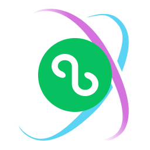
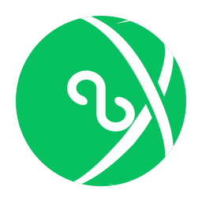
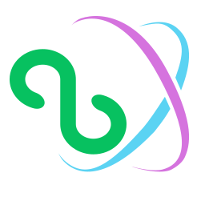
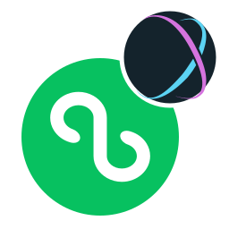
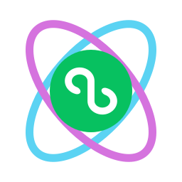
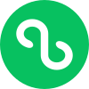
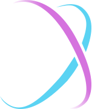

A
双轨环抱
Orbit
原始小程序圆标置于 StyleX 双轨中心，两个来源都清晰可见。
识别最直接 · 推荐
小程序 × StyleX · 5 个构图不同的 logo 方向

原始小程序圆标置于 StyleX 双轨中心，两个来源都清晰可见。
识别最直接 · 推荐

将官方 X 与小程序曲线化为白色负形，收拢进一个微信绿圆章。
单色友好 · 适合头像

去掉外圆，让小程序内部曲线与官方 X 并置交织，保留开放轮廓。
更轻盈 · 适合项目字标

保留完整小程序标识，StyleX X 作为右上徽章，表达适配器的关系。
原标保留最多 · 组合清楚

按 StyleX 双轨语言重绘等宽椭圆，围绕原始小程序圆标，强化小尺寸表现。
轨道更粗 · 适合 favicon

+
优先看 A。两个来源都保留得很清楚，适合作为 GitHub 组织头像。
喜欢更开放的图形看 C；希望轨道在小尺寸下更粗、更稳，看 E。
A–D 使用原始路径；E 参考官方双轨语言重新绘制。